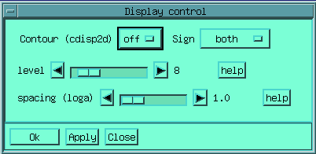
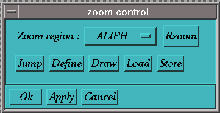

The following menus are usually present whenever the graphic
interface is activated, they are independent from the kind or work
currently in progress (except in the assignment module).
If the
graphic is missing, try typing the following command env_base.g,
which executes the macro which loads the default menu-bar, from which
you can add all the specific menus.
Some menus are optional or may
not be on screen at the same moment, see the Mode
Menu.
Entries followed by 3 dots (...) indicates that some input
will be asked to the user by the command.
The name of the entries
in the menus have been chosen to resemble as closely as possible to
the command name which would realise the same action. This makes the
menus a bit cryptic, but ease the process of learning the commands,
which can then be used to extend the capabilities of the program by
writing macros. These menus implement most of the actions that you
will need in regular processing, however there are many more
capabilities in Gifa than the ones which are available from this
standard menu interface.
This menu gives access to the basic information and documentation.
About GIFA
Will print introduction text, giving the some ideas on the Gifa
program, as well as some hints on how getting more information or
help.
This button is equivalent to the HELP command without
parameter.
History file
Gives access to the text of the History file.
Help...
Will prompt you for a command/macro name and will display the help
associated with that command/macro.
This button is equivalent to
the help macro called with a
parameter.
APropos...
Will prompt you for a word, and will show the name of all the
commands/macros that have this word in their help file (case
insensitive). Try for instance Fourier or display
This
button is equivalent to the apropos macro.
Documentation...
This button launch the Netscape program, with an hyper-text version of the current manual.
Gifa home page on the WEB...
This button launch the Netscape program, directly pointing to the Gifa home page : http://www.cbs.univ-montp1.fr/GIFA/base.html.
Config
Will give all the details on the internal configuration of the
program. You will have information on the current version number and
the licence of the program, as well as the value of the basic
parameters. Some values are hard-wired in the program at compile
time, such as the size of the working buffer, or the number of user
variables; some values may be modified by the user such as the kind
of plotter currently in use (see below).
This button is equivalent
to the CONFIG command.
bug report
Permits to edit and mail to me Marc-Andre.Delsuc@cbs.univ-montp1.fr a short bug report.
Switch to Simplified menu
Switch to a simplified mode of the menu environment. This simplified mode is design to help the first time user to use Gifa, concentrating on the most standard features.
Quit GIFA
Will quit the Gifa program loosing all data in memory not saved
with a WRITE command, and removing the journaling file. If you want
to keep the journaling file (a file called gifa.log in your $HOME
directory, which holds all the command issued during the Gifa
session), you will have to type in the QUIT command directly.
This
button is equivalent to the QUIT N
command.
This menu holds the basic commands for getting information on the program, reading and writing data-sets and quitting the program.
Read...
Will prompt you for the name of the file to be loaded into memory.
The program will switch to 1D, 2D or 3D depending on the data-set
itself. File should be in the standard Gifa format.
This button is
equivalent to the READ command.
Write...
Will prompt you for the name of the file to be written from the
data held into memory. The data-set will be created depending on the
DIM currently selected (1D, 2D or 3D).
This button is equivalent
to the WRITE command.
Read all format - Write all format
Are equivalent to Read and Write but a selection box permits to choose among all the supported Gifa file formats. For details, see below in the manual at the READx command
Bring from UXNMR
This button calls an interactive utilities that permits to easily bring data from a remote Bruker spectrometer, and convert it to Gifa data-set.
Read from VNMR
Calls the macro varian_read which makes an interface around the READV command, which reads VNMR FID files, and the macro varian_param which scans the procpar file to get acquisition parameters.
Add file to current
Calls the command ADD which permits to add a file to the current data-set (1D, 2D or 3D). A multiplier is used, which permit also to substract, or any other operation.
File name
Will give you the name of the last read or written file with the READ or WRITE commands (or the Read... or Write... button).
Size of data
Will give you the detail on the dimension, the sizes, the spectral
widths, etc... of the current data-set.
This button is equivalent
to the size macro.
More details
Will give you the even more details the current data-set, such as
the zoom window, the display values, etc...
This button is
equivalent to the list macro.
This menu permit to choose between different interface, already prepared in the standard distribution. Some button will completely change the interface, some, noted with 3 leading points, will add a menu at the end of the menu-bar
Switch to Varian default
After this command has been called, standard processing include a reverse operation, which is suitable for Varian data file, also the easy2d form presents an additional entry which permits to directly handle VNMR data files. This is equivalent to using the Varian macro
Proc 1D
Will activate a graphic interface suitable for processing and displaying 1D data-sets only.
Proc 2D
Will activate a graphic interface suitable for processing and displaying 2D and 1D data-sets.
Proc 3D
Will activate a graphic interface suitable for processing and displaying 3D, 2D and 1D data-sets.
Assignment
Will activate the assignment module (see assignment documentation)
... Advanced proc
Will add a menu permitting extended processing, such as baseline correction, water suppression, etc...
...MaxEnt
Will add a menu permitting to realise MaxEnt processing of the data-sets. (see MaxEnt documentation)
...Linear Prediction
Will add a menu permitting Linear Prediction processing. (see Linear Prediction Documentation)
...Dosy Processing
Will add a menu permitting Dosy processing. (see Dosy Processing documentation)
... Plot
Will add a menu permitting all commands associated to plots.
... Peak
Will add a menu permitting all commands associated to Peak-picking and Line fitting.
... Unix
Will add a menu permitting Unix-like commands.
Pulldown menus
Set the menu bar interface to act as a regular pulldown menus. Also resets the interface to 2D Mode
Static box menus
Set the menu bar interface to act as a set of static button boxes. Also resets the interface to 2D Mode
This menu holds the commands permitting to interact with the display.
Disp1D on
Will switch on the graphic window associated to the 1D buffer. Has
no effect if the window is already displayed.
This button is
equivalent to the DISP1D 1
command.
Disp2D on
Will switch on the graphic window associated to the 2D buffer,
displaying the density plot. Has no effect if the window is already
displayed.
This button is equivalent to the DISP2D
1 command.
CDisp2D on
Will switch on the graphic window associated to the 2D buffer,
displaying the contour plot. Has no effect if the window is already
displayed.
By default when entering the program, the DISP1D and
DISP2D windows are on but the CDISP2D window is off. This is because
the display in contour plot might be much slower than the density
display, and it makes little sense to display a FID in contour
plot!
This button is equivalent to the CDISP2D
1 command.
Zm (Zoom Control)
This button will enter a Zoom mode, were you can define a zoom
window, zoom in and out, and modify the scale of display. The four
little arrows permit to move the zoom window around without modifying
its size.
This button is equivalent to the ZM
command.
Display Control
This button will launch a form which permits to control other display parameters such as the state of the contour display window, the display of the negative regions, the number of levels and the spacing algorithm.
Equivalent to calling the dispcont
macro
-sign determines whether positive negative or both levels
will be displayed
-level controls the number of levels displayed
in the contour 2D window
-loga controls the algorithm used for the
level spacing
Freeze
This button will permit you to "freeze" a currently
opened window, by duplicating it. It is a bit like taking a snapshot
of the window, letting it on screen as long as you wish. There is no
way of altering a FREEZEd window but closing it.
This button is
equivalent to the FREEZE
command.
Rzoom
When in zoom mode, this button will jump to symmetrical zoom
region, relative to the diagonal.
This button is equivalent to the
rzoom macro.
Store zoom
Clicking this will memorise the current zoom window, it will be possible, at any later time to click on the back to stored zoom to go back to that window.
Back to stored zoom
Jumps back to the last stored zoom window
multi_zoom
Brings
up a tool which permits to handle several zoom regions easily.
Use
the pop-up menu to choose the region you want to zoom-in; use
the Jump button to actually jump into the selected region;
Define permits to define new regions which will appear in the
pop-up; Draw draws the defined regions on screen; Load
and Store permit to save the configuration to a file call
zoom_window. The Rzoom button will do the same action as the command
Rzoom above.
This button is equivalent to the multi_zoom
macro.
super1D
Creates a form box which permits to display up to 2 additional 1D
spectra on the top of the current 1D spectrum held in
memory
Equivalent to the super1d
macro
Be carefull that this command (as well as super2D)
superimposes spectra on the basis of the chemical shift. This permits
to compare spectra acquired in very different conditions (spectral
width, resolution, even field), but requires that the spectra are
correctly calibrated.
super2D
Creates a form box which permits to display up to 2 additional 2D
spectra on the top of the current 2D spectrum held in memory, and
displayed on the contour (CDisp2D on) window.
Equivalent to
the super2d macro
This menu holds all the commands permitting to navigate in the
different mode of the program, or to move data between the different
buffers.
All the processing in Gifa is performed in working
buffers. There are 3 main such buffers, the 1D, the 2D and the 3D
buffers. The content of the 1D and 2D buffers is directly visualised
in the 1D and 2D graphic windows. Only one such working area can be
selected at a given time, however switching from one buffer to the
other is virtually instantaneous. All commands and actions apply to
the currently selected buffer; processing commands (FT, etc..) as
well as display commands (SCALE,
ZOOM, etc...).
Choosing a
working buffer is completely independent from choosing to display one
data space or another.
dim 1 - dim 2 - dim 3
Switches the active working buffer. Respectively to 1D, 2D and 3D.
These buttons are equivalent to the DIM x
command, or to changing DIM from the Zoom Box.
An
independent buffer is available, which can hold indifferently a 1D,
2D or 3D data-set. This buffer cannot be easily processed nor
visualised, but can be used as an additional "hand" for
processing or comparison.
Put Data
Loads the DATA buffer with the contents of the currently active buffer. Equivalent to the PUT DATA command.
Get Data
Brings back the content of the DATA buffer into the working
buffer. Equivalent to the GET DATA command.
The sequence
Put Data ...any
processing... Get Data
can be used as a kind of
limited undo facility. Note however that certain commands use the
DATA buffer, thus destroying the Get Data capability.
AddData
Adds the content of the DATA buffer with the content of the working buffer, and put the result into the working buffer. To make a difference spectra, simply multiply the working buffer by -1 (mult -1) before adding. Equivalent to the ADDDATA command.
Point
Enter an interactive mode, where the coordinates of the cursor are displayed. Click into the text box to exit this mode. Equivalent to the point macro.
Unit...
Permits to choose the unit in which the coordinates of the cursor are displayed during the Point mode. Unit can be either Index, Hertz, ppm, second, damping or tabulated. Different unit can be chosen for horizontal and vertical axes in 2D. Equivalent to the UNIT and UNIT_Y commands.
Calib...
Starts a macro (calib) which permits to calibrate the current spectrum, by clicking on the reference peak, then entering its coordinates.
Select Row
Starts the macro rowint, which permits to interactively select rows (F2 sections) in the 2D window and display them in the 1D window. You exit this mode by clicking on the right mouse button. The last selected row is copied into the 1D working buffer.
Select Col
Starts the macro colint, which permits to interactively select columns (F1 sections) in the 2D window and display them in the 1D window. You exit this mode by clicking on the right mouse button. The last selected column is copied into the 1D working buffer.
Row...
Permits to copy a 2D row, selected by its index, into the 1D working buffer. Equivalent to the ROW command.
Col...
Permits to copy a 2D column, selected by its index, into the 1D working buffer. Equivalent to the COL command.